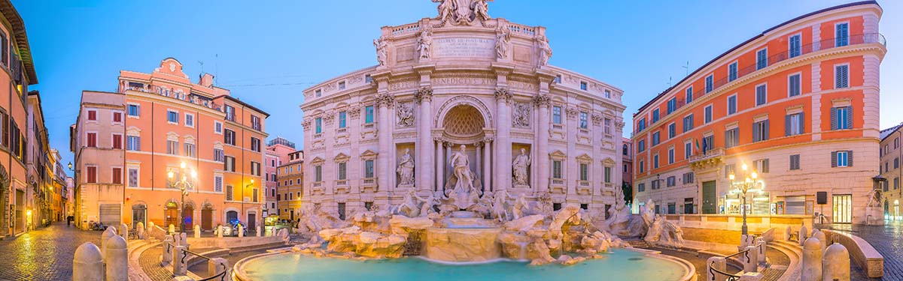

Lugares Turísticos na Europa
Roma, Itália
A'Fontana di Trevi', ou a Fonte de Trevi de Roma
A cidade famosa pelos diversos pontos turísticos de Roma.
A capital italiana é o destino dos sonhos de muitos viajantes. Conhecida também como "A cidade Eterna" sua história abrange mais de 2500 anos, sendo considerada uma das cidades mais antigas da Europa. A capital da Itália é uma das 20 cidades mais visitadas do mundo, e não é por acaso. Roma consegue unir história, romance e magia em um lugar só.
Paris, França
Torre Eiffel

A Torre Eiffel é um dos pontos turísticos mais famosos da Europa e do mundo inteiro.